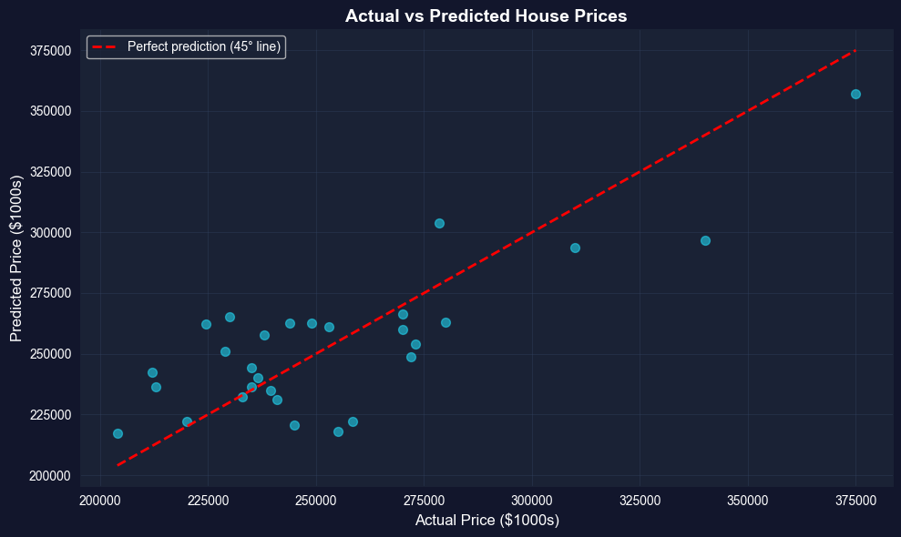
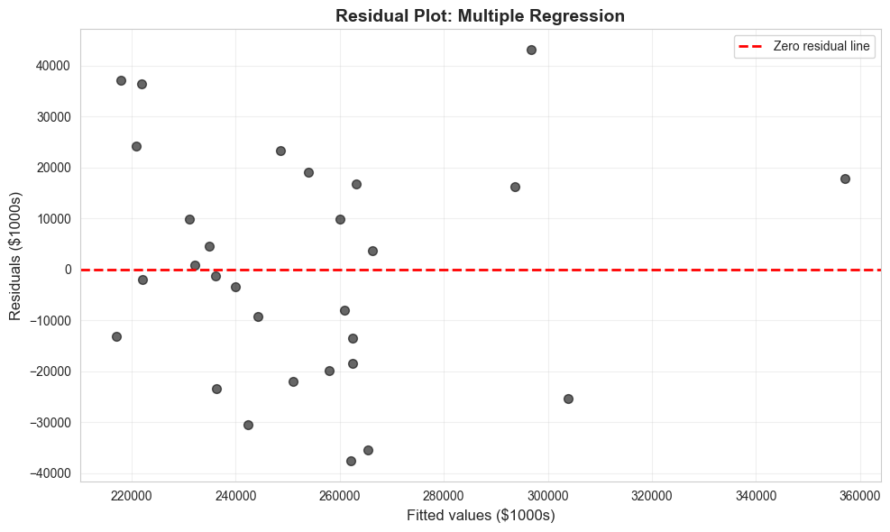
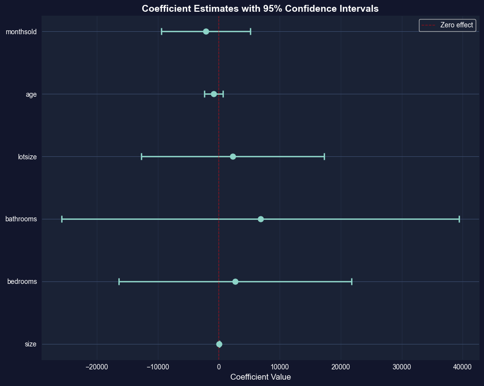

This notebook provides an interactive introduction to multiple regression analysis. You’ll learn how to work with multiple explanatory variables, interpret partial effects, assess model fit, and detect multicollinearity. All code runs directly in Google Colab without any local setup.
This chapter extends bivariate regression to the more realistic case where we want to predict an outcome using multiple explanatory variables simultaneously. Multiple regression allows us to estimate the partial effect of each variable while controlling for others—a crucial feature for empirical economic analysis.
Learning Objectives:
By the end of this chapter, you will be able to:
Extend bivariate regression concepts to multiple regression with several regressors
Interpret pairwise correlations and use them for exploratory data analysis
Understand the ordinary least squares (OLS) method for multiple regression
Interpret partial effects: how one regressor affects \(y\) while holding others constant
Distinguish between partial effects and total effects
Evaluate model fit using R-squared and adjusted R-squared
Understand information criteria (AIC, BIC) for model selection
Recognize when regression coefficients cannot be estimated (perfect collinearity)
Dataset used:
AED_HOUSE.DTA: 29 houses sold in Davis, California (1999) with price, size, bedrooms, bathrooms, lot size, age, and month sold
Key economic question: What is the effect of house size on price after controlling for other characteristics like bedrooms, bathrooms, and age?
Chapter outline:
10.1 Example: House Price and Characteristics
10.2 Two-Way Scatterplots
10.3 Correlation Analysis
10.4 Multiple Regression Estimation
10.5 Partial Effects — The FWL Theorem
10.6 Model Fit Statistics
10.7 Model Comparison
10.8 Inestimable Models and Multicollinearity
Key Takeaways
Practice Exercises
Case Studies
Estimated time: 60-75 minutes
Setup
First, we import the necessary Python packages and configure the environment for reproducibility. All data will stream directly from GitHub.
# Import required packagesimport numpy as npimport pandas as pdimport matplotlib.pyplot as pltimport seaborn as snsimport statsmodels.api as smfrom statsmodels.formula.api import olsfrom scipy import statsimport randomimport os# Set random seeds for reproducibilityRANDOM_SEED =42random.seed(RANDOM_SEED)np.random.seed(RANDOM_SEED)os.environ['PYTHONHASHSEED'] =str(RANDOM_SEED)# GitHub data URLGITHUB_DATA_URL ="https://raw.githubusercontent.com/quarcs-lab/data-open/master/AED/"# Set plotting stylesns.set_style("whitegrid")plt.rcParams['figure.figsize'] = (10, 6)print("Setup complete! Ready to analyze house price data.")
Setup complete! Ready to analyze house price data.
10.1: Example - House Price and Characteristics
We begin with a real estate dataset from Davis, California. Understanding house prices is a classic economic application because prices reflect both fundamental characteristics (size, bedrooms) and market conditions.
The dataset contains:
Price: Sale price in dollars
Size: House size in square feet
Bedrooms: Number of bedrooms
Bathrooms: Number of bathrooms
Lotsize: Size of lot (1=small, 2=medium, 3=large)
Age: House age in years
Monthsold: Month of year house was sold
Economic motivation: A simple regression of price on bedrooms might find a positive relationship, but is this because bedrooms directly add value, or because houses with more bedrooms tend to be larger? Multiple regression helps us disentangle these effects.
# Load house price datadata_house = pd.read_stata(GITHUB_DATA_URL +'AED_HOUSE.DTA')# Display first few observationsprint("First 10 observations:")print(data_house[['price', 'size', 'bedrooms', 'bathrooms', 'lotsize', 'age', 'monthsold']].head(10))# Display data summaryprint("\nSummary statistics:")print(data_house.describe())
Let’s compare a simple regression (price on bedrooms only) with a multiple regression (price on bedrooms AND size). This illustrates how controlling for other variables changes coefficient estimates.
Key insight: In the bivariate regression, the bedrooms coefficient captures both the direct effect of bedrooms and the indirect effect through correlation with size. In multiple regression, we isolate the partial effect of bedrooms holding size constant.
======================================================================
BIVARIATE REGRESSION: price ~ bedrooms
======================================================================
OLS Regression Results
==============================================================================
Dep. Variable: price R-squared: 0.183
Model: OLS Adj. R-squared: 0.152
Method: Least Squares F-statistic: 6.030
Date: Wed, 21 Jan 2026 Prob (F-statistic): 0.0208
Time: 15:16:42 Log-Likelihood: -343.06
No. Observations: 29 AIC: 690.1
Df Residuals: 27 BIC: 692.9
Df Model: 1
Covariance Type: nonrobust
==============================================================================
coef std err t P>|t| [0.025 0.975]
------------------------------------------------------------------------------
Intercept 1.641e+05 3.71e+04 4.423 0.000 8.8e+04 2.4e+05
bedrooms 2.367e+04 9637.976 2.456 0.021 3891.805 4.34e+04
==============================================================================
Omnibus: 23.468 Durbin-Watson: 0.345
Prob(Omnibus): 0.000 Jarque-Bera (JB): 35.285
Skew: 1.939 Prob(JB): 2.18e-08
Kurtosis: 6.764 Cond. No. 23.8
==============================================================================
Notes:
[1] Standard Errors assume that the covariance matrix of the errors is correctly specified.
======================================================================
MULTIPLE REGRESSION: price ~ bedrooms + size
======================================================================
OLS Regression Results
==============================================================================
Dep. Variable: price R-squared: 0.618
Model: OLS Adj. R-squared: 0.589
Method: Least Squares F-statistic: 21.03
Date: Wed, 21 Jan 2026 Prob (F-statistic): 3.68e-06
Time: 15:16:42 Log-Likelihood: -332.03
No. Observations: 29 AIC: 670.1
Df Residuals: 26 BIC: 674.2
Df Model: 2
Covariance Type: nonrobust
==============================================================================
coef std err t P>|t| [0.025 0.975]
------------------------------------------------------------------------------
Intercept 1.117e+05 2.76e+04 4.048 0.000 5.5e+04 1.68e+05
bedrooms 1553.4580 7846.866 0.198 0.845 -1.46e+04 1.77e+04
size 72.4081 13.300 5.444 0.000 45.070 99.746
==============================================================================
Omnibus: 0.516 Durbin-Watson: 1.230
Prob(Omnibus): 0.773 Jarque-Bera (JB): 0.609
Skew: -0.086 Prob(JB): 0.737
Kurtosis: 2.311 Cond. No. 1.21e+04
==============================================================================
Notes:
[1] Standard Errors assume that the covariance matrix of the errors is correctly specified.
[2] The condition number is large, 1.21e+04. This might indicate that there are
strong multicollinearity or other numerical problems.
======================================================================
COEFFICIENT COMPARISON
======================================================================
Bedrooms coefficient (bivariate): $23,667.30
Bedrooms coefficient (multiple): $1,553.46
Change: $-22,113.84
The coefficient drops dramatically because bedrooms was capturing size effects.
Key Concept 10.1: Partial Effects vs. Total Effects in Multiple Regression
In bivariate regression, the bedrooms coefficient ($23,667) captures both the direct effect of bedrooms and the indirect effect through correlation with size. In multiple regression, the bedrooms coefficient drops to $1,553 — the partial effect holding size constant. This dramatic change illustrates why controlling for confounders is essential for isolating individual variable effects.
10.2: Two-Way Scatterplots
Before running multiple regression, it’s useful to visualize pairwise relationships between variables. A scatterplot matrix shows all two-way scatterplots simultaneously.
What to look for:
Strong linear relationships (potential predictors of price)
Correlation between explanatory variables (potential multicollinearity)
Outliers or non-linear patterns
The diagonal shows the distribution of each variable using kernel density estimates (KDE).
Scatterplot matrix created.
Notice: Price shows strongest relationship with Size.
Key Concept 10.2: Exploratory Data Analysis with Scatterplot Matrices
Pairwise scatterplot matrices display all two-way relationships simultaneously, revealing linear associations, nonlinearities, clusters, and outliers before formal modeling. They also highlight potential multicollinearity: if two regressors are tightly correlated (e.g., size and bedrooms), their individual effects may be hard to separate in a regression.
10.3: Correlation Analysis
The correlation coefficient measures the strength of linear association between two variables, ranging from -1 (perfect negative) to +1 (perfect positive).
Correlation matrix insights:
Price is most correlated with Size (r = 0.79), then Bedrooms (r = 0.43)
Size and Bedrooms are correlated (r = 0.52), which can cause multicollinearity
Key Concept 10.3: Correlation vs. Causation in Multivariate Analysis
High bivariate correlation (e.g., bedrooms-price, \(r = 0.43\)) may diminish or vanish after controlling for confounders. In our data, bedrooms correlate with price largely because bigger houses have more bedrooms. Multiple regression isolates each variable’s partial contribution, revealing that size — not bedrooms — drives most of the price variation.
Having explored the data visually and through correlations, we now estimate the formal multiple regression model to quantify partial effects.
10.4: Multiple Regression Estimation
Now we estimate the full multiple regression model with all available predictors. The regression equation is:
======================================================================
FULL MULTIPLE REGRESSION MODEL
======================================================================
OLS Regression Results
==============================================================================
Dep. Variable: price R-squared: 0.651
Model: OLS Adj. R-squared: 0.555
Method: Least Squares F-statistic: 6.826
Date: Wed, 21 Jan 2026 Prob (F-statistic): 0.000342
Time: 15:16:45 Log-Likelihood: -330.74
No. Observations: 29 AIC: 675.5
Df Residuals: 22 BIC: 685.1
Df Model: 6
Covariance Type: nonrobust
==============================================================================
coef std err t P>|t| [0.025 0.975]
------------------------------------------------------------------------------
Intercept 1.378e+05 6.15e+04 2.242 0.035 1.03e+04 2.65e+05
size 68.3694 15.389 4.443 0.000 36.454 100.285
bedrooms 2685.3151 9192.526 0.292 0.773 -1.64e+04 2.17e+04
bathrooms 6832.8800 1.57e+04 0.435 0.668 -2.58e+04 3.94e+04
lotsize 2303.2214 7226.535 0.319 0.753 -1.27e+04 1.73e+04
age -833.0386 719.335 -1.158 0.259 -2324.847 658.770
monthsold -2088.5036 3520.898 -0.593 0.559 -9390.399 5213.392
==============================================================================
Omnibus: 1.317 Durbin-Watson: 1.259
Prob(Omnibus): 0.518 Jarque-Bera (JB): 0.980
Skew: 0.151 Prob(JB): 0.612
Kurtosis: 2.152 Cond. No. 2.59e+04
==============================================================================
Notes:
[1] Standard Errors assume that the covariance matrix of the errors is correctly specified.
[2] The condition number is large, 2.59e+04. This might indicate that there are
strong multicollinearity or other numerical problems.
Coefficient Interpretation with Confidence Intervals
Each regression coefficient represents a partial effect: the expected change in price when that variable increases by one unit, holding all other variables constant.
Example interpretation (Size coefficient):
Coefficient ≈ $68.37 per square foot
Interpretation: A one square foot increase in house size is associated with a $68.37 increase in price, holding bedrooms, bathrooms, lot size, age, and month sold constant.
The 95% confidence interval tells us the range of plausible values for each coefficient.
# Display coefficients with 95% confidence intervalsconf_int = model_full.conf_int(alpha=0.05)coef_table = pd.DataFrame({'Coefficient': model_full.params,'Std. Error': model_full.bse,'CI Lower': conf_int.iloc[:, 0],'CI Upper': conf_int.iloc[:, 1],'t-statistic': model_full.tvalues,'p-value': model_full.pvalues})print("Coefficients with 95% Confidence Intervals:")print(coef_table)print("\nKey result: Size is the only statistically significant predictor (p < 0.05).")
Key Concept 10.4: Interpreting Partial Effects in Multiple Regression
Each coefficient \(b_j\) measures the expected change in \(y\) when \(x_j\) increases by one unit, holding all other regressors constant. For example, a size coefficient of $68.37 means each additional square foot is associated with a $68.37 price increase, controlling for bedrooms, bathrooms, lot size, age, and month sold. Statistical significance is assessed through confidence intervals and \(t\)-tests.
10.5: Partial Effects - The FWL Theorem
The Frisch-Waugh-Lovell (FWL) Theorem states that the coefficient on any variable in multiple regression equals the coefficient from a bivariate regression of \(y\) on the residualized version of that variable.
Demonstration:
Regress size on all other variables, obtain residuals \(\widetilde{\text{size}}\)
Regress price on \(\widetilde{\text{size}}\) only
The coefficient will exactly match the size coefficient from the full multiple regression
Intuition: The residual \(\widetilde{\text{size}}\) represents the variation in size that is not explained by other variables. This is why multiple regression isolates partial effects.
# Step 1: Regress size on all other variablesmodel_size_on_others = ols('size ~ bedrooms + bathrooms + lotsize + age + monthsold', data=data_house).fit()resid_size = model_size_on_others.resid# Step 2: Regress price on residualized sizedata_house['resid_size'] = resid_sizemodel_price_on_resid = ols('price ~ resid_size', data=data_house).fit()# Compare coefficientsprint("="*70)print("DEMONSTRATION: FWL THEOREM (Partial Effects)")print("="*70)print(f"Size coefficient from FULL multiple regression: {model_full.params['size']:.10f}")print(f"Coefficient on residualized size (bivariate): {model_price_on_resid.params['resid_size']:.10f}")print(f"Difference (numerical precision): {abs(model_full.params['size'] - model_price_on_resid.params['resid_size']):.15f}")print("\nThese coefficients are identical! This proves the partial effect interpretation.")
======================================================================
DEMONSTRATION: FWL THEOREM (Partial Effects)
======================================================================
Size coefficient from FULL multiple regression: 68.3694189767
Coefficient on residualized size (bivariate): 68.3694189767
Difference (numerical precision): 0.000000000000057
These coefficients are identical! This proves the partial effect interpretation.
Key Concept 10.5: The Frisch-Waugh-Lovell (FWL) Theorem
The partial effect of \(x_j\) in a multiple regression equals the slope from a bivariate regression of \(y\) on \(\widetilde{x}_j\), where \(\widetilde{x}_j\) is the residual from regressing \(x_j\) on all other regressors. Intuitively, \(\widetilde{x}_j\) captures the variation in \(x_j\) that is independent of the other variables — this is exactly what multiple regression uses to estimate partial effects.
Now that we understand partial effects and the FWL theorem, let’s evaluate how well the overall regression model fits the data.
10.6: Model Fit Statistics
Several statistics summarize how well the regression model fits the data:
R-squared (\(R^2\)):
Fraction of variation in \(y\) explained by the regressors
# Calculate and display model fit statisticsn =len(data_house)k =len(model_full.params) # includes interceptdf = n - kprint("="*70)print("MODEL FIT STATISTICS")print("="*70)print(f"Sample size (n): {n}")print(f"Number of parameters (k): {k}")print(f"Degrees of freedom (n-k): {df}")print(f"\nR-squared: {model_full.rsquared:.6f}")print(f"Adjusted R-squared: {model_full.rsquared_adj:.6f}")print(f"Root MSE: ${np.sqrt(model_full.mse_resid):,.2f}")# Verify R² = [Corr(y, ŷ)]²predicted = model_full.fittedvaluescorr_y_yhat = np.corrcoef(data_house['price'], predicted)[0, 1]print(f"\nVerification: R² = [Corr(y, ŷ)]²")print(f" Correlation(y, ŷ): {corr_y_yhat:.6f}")print(f" [Correlation(y, ŷ)]²: {corr_y_yhat**2:.6f}")print(f" R² from model: {model_full.rsquared:.6f}")print(f" Match: {np.isclose(corr_y_yhat**2, model_full.rsquared)}")
======================================================================
MODEL FIT STATISTICS
======================================================================
Sample size (n): 29
Number of parameters (k): 7
Degrees of freedom (n-k): 22
R-squared: 0.650553
Adjusted R-squared: 0.555249
Root MSE: $24,935.73
Verification: R² = [Corr(y, ŷ)]²
Correlation(y, ŷ): 0.806569
[Correlation(y, ŷ)]²: 0.650553
R² from model: 0.650553
Match: True
Information Criteria (AIC and BIC)
Akaike Information Criterion (AIC) and Bayesian Information Criterion (BIC) are more sophisticated measures that penalize model complexity:
\[\text{AIC} = n \times \ln(\widehat{\sigma}_e^2) + n(1 + \ln 2\pi) + 2k\]\[\text{BIC} = n \times \ln(\widehat{\sigma}_e^2) + n(1 + \ln 2\pi) + k \times \ln(n)\]
Key points:
Lower values are better (unlike R²)
BIC penalizes complexity more heavily than AIC
Useful for comparing non-nested models
Different software packages may use different conventions (scaling by \(n\))
# Calculate information criteriaprint("="*70)print("INFORMATION CRITERIA")print("="*70)# AIC and BIC from statsmodelsprint(f"AIC (statsmodels): {model_full.aic:.4f}")print(f"BIC (statsmodels): {model_full.bic:.4f}")# Manual calculation (Stata convention)rss = np.sum(model_full.resid **2)aic_stata = n * np.log(rss/n) + n * (1+ np.log(2*np.pi)) +2*kbic_stata = n * np.log(rss/n) + n * (1+ np.log(2*np.pi)) + k*np.log(n)print(f"\nAIC (Stata convention): {aic_stata:.4f}")print(f"BIC (Stata convention): {bic_stata:.4f}")print("\nNote: Different conventions yield different values, but ranking is consistent.")
======================================================================
INFORMATION CRITERIA
======================================================================
AIC (statsmodels): 675.4824
BIC (statsmodels): 685.0535
AIC (Stata convention): 675.4824
BIC (Stata convention): 685.0535
Note: Different conventions yield different values, but ranking is consistent.
Key Concept 10.6: Model Selection with Adjusted R-squared vs. Information Criteria
Adjusted \(R^2\) penalizes complexity mildly by dividing sums of squares by degrees of freedom. Information criteria (AIC, BIC) impose stronger penalties: BIC = \(n \ln(\hat{\sigma}_e^2) + k \ln(n)\). Smaller AIC/BIC values indicate better models. BIC is generally preferred because its penalty grows with sample size, favoring more parsimonious specifications.
10.7: Model Comparison
It’s often useful to compare multiple model specifications side-by-side. Here we compare:
Simple model: Price predicted by size only
Full model: Price predicted by all variables
Key comparison points:
How much does R² improve?
Does adjusted R² improve (accounting for added complexity)?
How do coefficient estimates change?
Economic interpretation: If adding 5 more variables only modestly improves fit, the simple model may be preferred (parsimony principle).
# Estimate simple model (size only)model_simple = ols('price ~ size', data=data_house).fit()# Create comparison tableprint("="*70)print("MODEL COMPARISON: Simple vs. Full")print("="*70)comparison_stats = pd.DataFrame({'Model': ['Simple (size only)', 'Full (all variables)'],'R²': [model_simple.rsquared, model_full.rsquared],'Adj R²': [model_simple.rsquared_adj, model_full.rsquared_adj],'AIC': [model_simple.aic, model_full.aic],'BIC': [model_simple.bic, model_full.bic],'N': [n, n]})print(comparison_stats.to_string(index=False))print("\nInterpretation:")print(f" - R² increases from {model_simple.rsquared:.3f} to {model_full.rsquared:.3f} (+{model_full.rsquared - model_simple.rsquared:.3f})")print(f" - Adj R² DECREASES from {model_simple.rsquared_adj:.3f} to {model_full.rsquared_adj:.3f} ({model_full.rsquared_adj - model_simple.rsquared_adj:.3f})")print(" - This suggests the added variables don't improve fit enough to justify complexity.")print(" - Simple model may be preferred (parsimony principle).")
======================================================================
MODEL COMPARISON: Simple vs. Full
======================================================================
Model R² Adj R² AIC BIC N
Simple (size only) 0.617453 0.603285 668.106844 670.841436 29
Full (all variables) 0.650553 0.555249 675.482401 685.053472 29
Interpretation:
- R² increases from 0.617 to 0.651 (+0.033)
- Adj R² DECREASES from 0.603 to 0.555 (-0.048)
- This suggests the added variables don't improve fit enough to justify complexity.
- Simple model may be preferred (parsimony principle).
Key Concept 10.7: The Parsimony Principle
Simpler models are preferred unless additional variables meaningfully improve fit. In our house price example, adding five variables beyond size barely increased \(R^2\) (0.618 \(\to\) 0.651) while adjusted \(R^2\) actually fell (0.603 \(\to\) 0.555). Check adjusted \(R^2\), AIC, and BIC — if they don’t improve, the simpler model is preferred.
Having compared models, we now turn to a critical pitfall: when regressors are too closely related to separate their individual effects.
10.8: Inestimable Models and Multicollinearity
Perfect multicollinearity occurs when one regressor is an exact linear combination of others. In this case, OLS cannot estimate all coefficients (the model is “inestimable”).
Example: If we create size_twice = 2 × size and include both size and size_twice as regressors, the model is perfectly collinear.
Key Concept 10.8: Detecting Multicollinearity with VIF
The Variance Inflation Factor (VIF) quantifies how much a coefficient’s variance is inflated due to correlation with other regressors. VIF\(_j = 1/(1 - R_j^2)\), where \(R_j^2\) is from regressing \(x_j\) on all other regressors. A VIF above 5 suggests moderate concern; above 10 indicates severe multicollinearity that inflates standard errors and destabilizes estimates. Perfect collinearity (VIF \(\to \infty\)) makes coefficients inestimable.
Visualization: Actual vs. Predicted Values
A plot of actual vs. predicted values helps visualize model fit. Points close to the 45-degree line indicate accurate predictions.
# Create actual vs predicted plotfig, ax = plt.subplots(figsize=(10, 6))ax.scatter(data_house['price'], model_full.fittedvalues, alpha=0.6, s=50, color='black')ax.plot([data_house['price'].min(), data_house['price'].max()], [data_house['price'].min(), data_house['price'].max()],'r--', linewidth=2, label='Perfect prediction (45° line)')ax.set_xlabel('Actual Price ($1000s)', fontsize=12)ax.set_ylabel('Predicted Price ($1000s)', fontsize=12)ax.set_title('Actual vs Predicted House Prices', fontsize=14, fontweight='bold')ax.legend()ax.grid(True, alpha=0.3)plt.tight_layout()plt.show()print("Points close to the red line indicate accurate predictions.")

Points close to the red line indicate accurate predictions.
Visualization: Residual Plot
A residual plot (residuals vs. fitted values) helps diagnose model problems:
Random scatter around zero: Good (model assumptions satisfied)
Patterns (curves, funnels): Bad (model misspecification or heteroskedasticity)
Outliers: Investigate unusual observations
# Create residual plotfig, ax = plt.subplots(figsize=(10, 6))ax.scatter(model_full.fittedvalues, model_full.resid, alpha=0.6, s=50, color='black')ax.axhline(y=0, color='red', linestyle='--', linewidth=2, label='Zero residual line')ax.set_xlabel('Fitted values ($1000s)', fontsize=12)ax.set_ylabel('Residuals ($1000s)', fontsize=12)ax.set_title('Residual Plot: Multiple Regression', fontsize=14, fontweight='bold')ax.legend()ax.grid(True, alpha=0.3)plt.tight_layout()plt.show()print("Random scatter around zero suggests model assumptions are reasonable.")

Random scatter around zero suggests model assumptions are reasonable.
Visualization: Coefficient Plot with Confidence Intervals
A coefficient plot displays estimated coefficients with their 95% confidence intervals. This makes it easy to see:
Which coefficients are significantly different from zero (CI doesn’t include zero)
Relative magnitude of effects
Precision of estimates (narrow vs. wide CIs)
# Create coefficient plot with confidence intervalsfig, ax = plt.subplots(figsize=(10, 8))# Exclude intercept for better visualizationparams_no_int = model_full.params[1:]ci_no_int = conf_int.iloc[1:, :]y_pos = np.arange(len(params_no_int))ax.errorbar(params_no_int.values, y_pos, xerr=[params_no_int.values - ci_no_int.iloc[:, 0].values, ci_no_int.iloc[:, 1].values - params_no_int.values], fmt='o', markersize=8, capsize=5, capthick=2, linewidth=2)ax.set_yticks(y_pos)ax.set_yticklabels(params_no_int.index)ax.axvline(x=0, color='red', linestyle='--', linewidth=1, alpha=0.5, label='Zero effect')ax.set_xlabel('Coefficient Value', fontsize=12)ax.set_title('Coefficient Estimates with 95% Confidence Intervals', fontsize=14, fontweight='bold')ax.legend()ax.grid(True, alpha=0.3, axis='x')plt.tight_layout()plt.show()print("Coefficients whose CI crosses zero are not statistically significant.")

Coefficients whose CI crosses zero are not statistically significant.
Key Takeaways
Data Exploration and Correlation:
Multiple regression extends bivariate regression to include several regressors simultaneously
Summary statistics and two-way scatterplots provide initial overview of variable relationships
Correlation matrices reveal pairwise associations (e.g., price-size correlation of 0.79)
Correlation can be misleading — bedrooms correlate with price, but may simply reflect house size
OLS minimizes the sum of squared residuals: \(\min \sum (y_i - \widehat{y}_i)^2\)
The coefficient \(b_j\) can be computed by bivariate regression of \(y\) on \(\widetilde{x}_j\) (residualized \(x_j\))
Partial Effects:
Each coefficient \(b_j\) measures the partial effect: the change in \(\widehat{y}\) when \(x_j\) changes by one unit, holding all other regressors constant
Partial effects differ from total effects (which allow other regressors to vary)
OLS measures association, not causation — use careful language (“associated with”)
Model Fit:
\(R^2\) measures the fraction of variation in \(y\) explained by all regressors (0 to 1)
Adjusted \(R^2\) penalizes model complexity: can decrease when adding weak regressors
Standard error of regression \(s_e\) measures typical prediction error in units of \(y\)
Example: Adding 5 regressors increased \(R^2\) from 0.618 to 0.651 but decreased \(\bar{R}^2\) from 0.603 to 0.555
Information Criteria:
AIC, BIC, and HQIC penalize larger models more heavily than adjusted \(R^2\)
Smaller values indicate better models
BIC is generally preferred (stronger complexity penalty than AIC)
Multicollinearity:
Perfect collinearity makes some coefficients inestimable (computer shows “omitted”)
Next steps: Chapter 11 covers statistical inference for multiple regression — hypothesis tests, confidence intervals, and overall F-tests for model significance.
Congratulations on completing Chapter 10! You now have the tools to estimate and evaluate multiple regression models, a foundation for the rest of the course.
Practice Exercises
Test your understanding of multiple regression concepts with these exercises.
Exercise 1: Residuals and Fitted Values
A regression leads to the fitted equation \(\widehat{y} = 2 + 3x_2 + 4x_3\).
What is the predicted value for observation \((x_2, x_3) = (2, 1)\)?
If the actual value is \(y = 9\), what is the residual?
Is this observation over-predicted or under-predicted?
Exercise 2: Partial vs. Total Effects
Suppose OLS regression on the same dataset leads to:
Bivariate: \(\widehat{y} = 6 + 5x_2\)
Multiple: \(\widehat{y} = 2 + 3x_2 + 4x_3\)
Why does the coefficient on \(x_2\) change from 5 to 3?
Which coefficient (5 or 3) represents the partial effect of \(x_2\)? Explain.
Under what condition would the bivariate and multiple regression coefficients on \(x_2\) be equal?
Exercise 3: R-squared and Adjusted R-squared
OLS regression of \(y\) on \(x\) for a sample of size \(n = 53\) leads to Residual SS = 20 and Total SS = 50.
Compute \(R^2\).
Compute the standard error of the regression \(s_e\).
Compute the correlation between \(y\) and \(\widehat{y}\).
If we add 3 more regressors and the Residual SS drops to 18, compute the new \(R^2\) and adjusted \(R^2\). Does the model improve?
Exercise 4: Information Criteria
Consider two models estimated on \(n = 29\) observations:
Model A (2 parameters): AIC = 668.1, BIC = 670.8
Model B (7 parameters): AIC = 675.5, BIC = 685.1
Which model is preferred by AIC? By BIC?
Why does BIC penalize Model B more heavily than AIC?
What economic reasoning supports the simpler model in this case?
Exercise 5: Multicollinearity Detection
A multiple regression of house prices yields the following VIF values:
Variable
VIF
Size
40.1
Bedrooms
57.8
Bathrooms
34.7
Age
21.0
Which variables show the most severe multicollinearity?
What consequences does high VIF have for coefficient estimates and inference?
Suggest a strategy to reduce multicollinearity in this model.
Exercise 6: Model Building
You have data on employee wages with variables: education (years), experience (years), age, tenure (years at current firm), and gender.
Why might including both age and experience create multicollinearity?
Propose two alternative model specifications and explain the trade-offs.
How would you use adjusted \(R^2\) and BIC to select the preferred specification?
Case Studies
Case Study 1: Multiple Regression for Cross-Country Productivity
In this case study, you will apply multiple regression techniques to investigate how human capital and physical capital jointly explain cross-country differences in labor productivity. Using data from 108 countries over 1990-2014, you will explore correlations, estimate multiple regression models, interpret partial effects, and compare model specifications.
Dataset: Mendez Convergence Clubs Data
Source: Mendez (2020), 108 countries, 1990-2014
Key variables:
lp — Labor productivity (GDP per worker)
rk — Physical capital per worker
hc — Human capital index
rgdppc — Real GDP per capita
region — Geographic region
Research question: How do human capital and physical capital jointly explain cross-country productivity differences?
# Load the Mendez convergence clubs dataseturl ="https://raw.githubusercontent.com/quarcs-lab/mendez2020-convergence-clubs-code-data/master/assets/dat.csv"dat = pd.read_csv(url)dat_2014 = dat[dat['year'] ==2014].dropna(subset=['lp', 'rk', 'hc']).copy()print(f"Cross-section sample: {len(dat_2014)} countries (year 2014)")dat_2014.head()
Which predictor is most strongly correlated with \(\ln(\text{lp})\)?
Are \(\ln(\text{rk})\) and hc correlated with each other? What implications does this have for multiple regression?
Key Concept 10.9: Functional Form and Cross-Country Comparisons
When comparing countries with vastly different income levels, logarithmic transformations are essential. Using \(\ln(\text{lp})\) and \(\ln(\text{rk})\) compresses the scale so that both Luxembourg and Malawi can be meaningfully compared. Coefficients on log-transformed variables have elasticity interpretations, while coefficients on level variables (like hc) represent semi-elasticities.
Estimate bivariate and multiple regression models for labor productivity.
# Model 1: ln(lp) ~ ln(rk) onlymodel1 = ols('ln_lp ~ ln_rk', data=dat_2014).fit()print(model1.summary())# Model 2: ln(lp) ~ hc onlymodel2 = ols('ln_lp ~ hc', data=dat_2014).fit()print(model2.summary())# Model 3: ln(lp) ~ ln(rk) + hc (multiple regression)model3 = ols('ln_lp ~ ln_rk + hc', data=dat_2014).fit()print(model3.summary())
Questions:
How do the coefficients on \(\ln(\text{rk})\) change between Model 1 and Model 3?
Does adding human capital improve the model? Compare \(R^2\) and adjusted \(R^2\).
Task 4: Interpret Partial Effects (Semi-guided)
Interpret the coefficients from the multiple regression model.
# Display coefficients with confidence intervalsprint("Model 3 Coefficients:")print(model3.params)print("\n95% Confidence Intervals:")print(model3.conf_int())
Questions:
Interpret the coefficient on \(\ln(\text{rk})\) in Model 3. What does it mean in economic terms?
Interpret the coefficient on hc. How does a one-unit increase in human capital relate to productivity?
Are both coefficients statistically significant? How do you know?
Task 5: Model Selection (Independent)
Compare models using fit statistics and information criteria.
Your tasks:
Create a comparison table with \(R^2\), adjusted \(R^2\), AIC, and BIC for all three models
Which model is preferred by adjusted \(R^2\)? By AIC? By BIC?
Does the parsimony principle favor one model over another?
Calculate VIF for Model 3 — is multicollinearity a concern?
Hint: Use model.rsquared, model.rsquared_adj, model.aic, model.bic and variance_inflation_factor() from statsmodels.
Task 6: Development Policy Brief (Independent)
Write a 200-300 word policy brief summarizing your findings.
Your brief should address:
What are the key determinants of cross-country labor productivity?
What is the relative importance of physical capital vs. human capital?
How do partial effects differ from bivariate associations?
What policy implications follow from your analysis?
What limitations should policymakers keep in mind (association vs. causation)?
Key Concept 10.10: Multiple Regression in Development Economics
Cross-country productivity regressions are central to development economics. By controlling for both physical capital (\(\ln(\text{rk})\)) and human capital (hc), we can assess each factor’s partial contribution to productivity. This addresses a key policy question: should developing countries invest in machines or education? Multiple regression helps disentangle these effects, though causal claims require careful identification strategies.
What You’ve Learned
In this case study, you applied the full multiple regression toolkit to cross-country productivity data:
Explored data with scatterplot matrices and correlation analysis
Estimated bivariate and multiple regression models, observing how coefficients change
Interpreted partial effects of physical and human capital on productivity
Compared model specifications using adjusted \(R^2\), AIC, and BIC
Connected statistical findings to development policy questions
These skills form the foundation for more advanced empirical analysis in the chapters ahead.
Case Study 2: Multiple Satellite Predictors of Development
Research Question: Do satellite image embeddings improve our ability to predict municipal development beyond nighttime lights alone?
In Chapter 1, we introduced the DS4Bolivia project and estimated a bivariate regression of development on nighttime lights. Now we extend this analysis using Chapter 10’s multiple regression tools, adding satellite image embeddings as additional predictors to test whether they improve our ability to predict municipal development.
Background: Nighttime lights (NTL) are a well-established proxy for economic activity, but they capture only one dimension of a municipality’s characteristics — nocturnal luminosity. Daytime satellite imagery contains far richer information: building density, road networks, agricultural patterns, vegetation cover. Deep learning models can extract this information as 64-dimensional embedding vectors, where each dimension captures abstract visual patterns learned automatically from the data.
The key question for multiple regression: Does adding these satellite embeddings as extra regressors significantly improve explanatory power compared to NTL alone? And if so, which embeddings matter most?
Variables for this case study:
imds — Municipal Sustainable Development Index (0-100, outcome variable)
ln_NTLpc2017 — Log nighttime lights per capita (established predictor from Chapter 1)
mun, dep — Municipality and department identifiers
Your Task: Use correlation analysis, multiple regression, the FWL theorem, and model comparison tools from Chapter 10 to evaluate whether satellite embeddings add predictive value beyond nighttime lights.
Load the DS4Bolivia Data
Let’s load the DS4Bolivia dataset and select the variables needed for our multiple regression analysis. We focus on the development index, nighttime lights, and five selected satellite embedding dimensions.
Objective: Understand the satellite embedding variables and how they compare to nighttime lights.
Instructions:
Generate summary statistics for all predictor variables using describe()
Compare the scale and distribution of NTL vs. embedding variables
Check for missing values across all selected variables
Consider: What are satellite embeddings? How do they differ from NTL?
Key insight: Unlike NTL (which has a clear physical interpretation — light intensity), embedding dimensions are abstract features extracted by neural networks. Dimension A00 doesn’t mean “vegetation” or “roads” — it captures a learned combination of visual patterns.
# Your code here: Explore the satellite predictor variables## Step 1: Summary statistics for all numeric variablesprint("="*70)print("DESCRIPTIVE STATISTICS: DEVELOPMENT AND SATELLITE PREDICTORS")print("="*70)print(bol_sat[['imds', 'ln_NTLpc2017', 'A00', 'A10', 'A20', 'A30', 'A40']].describe().round(3))# Step 2: Check for missing valuesprint("\n"+"="*70)print("MISSING VALUES")print("="*70)print(bol_sat.isnull().sum())# Step 3: Compare variable rangesprint("\n"+"="*70)print("VARIABLE RANGES")print("="*70)for var in ['imds', 'ln_NTLpc2017', 'A00', 'A10', 'A20', 'A30', 'A40']: col = bol_sat[var].dropna()print(f" {var:16s} range: [{col.min():.3f}, {col.max():.3f}] std: {col.std():.3f}")
Task 2: Correlation Analysis (Guided)
Objective: Compute and visualize the correlation structure among all predictors and the outcome variable.
Instructions:
Compute the correlation matrix for imds, ln_NTLpc2017, and all five embedding variables
Display the correlation matrix as a heatmap
Identify: Which embeddings correlate most strongly with imds?
Identify: Do the embeddings correlate with each other (potential multicollinearity)?
Do the embeddings correlate with NTL, or do they capture different information?
Apply what you learned in section 10.3: Use seaborn.heatmap() with annotated correlation values.
# Your code here: Correlation analysis of satellite predictors## Step 1: Compute correlation matrixcorr_vars = ['imds', 'ln_NTLpc2017', 'A00', 'A10', 'A20', 'A30', 'A40']corr_sat = bol_sat[corr_vars].dropna().corr()print("="*70)print("CORRELATION MATRIX: DEVELOPMENT AND SATELLITE PREDICTORS")print("="*70)print(corr_sat.round(3))# Step 2: Visualize as heatmapfig, ax = plt.subplots(figsize=(10, 8))sns.heatmap(corr_sat, annot=True, fmt='.3f', cmap='coolwarm', center=0, square=True, linewidths=1, cbar_kws={"shrink": 0.8})ax.set_title('Correlation Matrix: IMDS, NTL, and Satellite Embeddings', fontsize=14, fontweight='bold')plt.tight_layout()plt.show()# Step 3: Highlight strongest correlations with IMDSprint("\nCorrelations with IMDS (development index):")imds_corr = corr_sat['imds'].drop('imds').sort_values(key=abs, ascending=False)for var, r in imds_corr.items():print(f" {var:16s} r = {r:+.3f}")
Key Concept 10.12: High-Dimensional Satellite Features
Satellite embeddings are 64 abstract features extracted by deep learning models (convolutional neural networks) from daytime satellite imagery. Unlike handcrafted variables (e.g., NDVI for vegetation), each embedding dimension captures complex visual patterns — road density, building structures, agricultural layouts — learned automatically from the data. These features are not directly interpretable (dimension A00 doesn’t have a specific meaning), but they collectively encode rich information about a municipality’s physical landscape.
Task 3: Multiple Regression (Semi-guided)
Objective: Estimate a multiple regression model with NTL and satellite embeddings as predictors.
Instructions:
Estimate the full model: imds ~ ln_NTLpc2017 + A00 + A10 + A20 + A30 + A40
Display the regression summary
Compare \(R^2\) with the bivariate NTL-only model from Chapter 1
Interpret: How much does adding embeddings improve explanatory power?
Which embedding coefficients are statistically significant?
Apply what you learned in section 10.4: Use ols() from statsmodels and interpret partial effects.
Objective: Demonstrate the Frisch-Waugh-Lovell theorem by showing that the NTL coefficient in the multiple regression equals the coefficient from regressing residualized IMDS on residualized NTL.
Instructions:
Regress imds on all embedding variables (A00, A10, A20, A30, A40), save residuals \(e_y\)
Regress ln_NTLpc2017 on all embedding variables, save residuals \(e_x\)
Regress \(e_y\) on \(e_x\) (bivariate regression of residuals)
Verify that the coefficient matches the NTL coefficient from the full multiple regression
Apply what you learned in section 10.5: This demonstrates that the partial effect of NTL is computed from the variation in NTL that is independent of the satellite embeddings.
# Your code here: FWL theorem demonstration## Step 1: Regress imds on embeddings only, save residuals e_ymodel_y_on_emb = ols('imds ~ A00 + A10 + A20 + A30 + A40', data=reg_data).fit()e_y = model_y_on_emb.resid# Step 2: Regress ln_NTLpc2017 on embeddings only, save residuals e_xmodel_x_on_emb = ols('ln_NTLpc2017 ~ A00 + A10 + A20 + A30 + A40', data=reg_data).fit()e_x = model_x_on_emb.resid# Step 3: Regress e_y on e_xfwl_data = pd.DataFrame({'e_y': e_y, 'e_x': e_x})model_fwl = ols('e_y ~ e_x', data=fwl_data).fit()# Step 4: Compare coefficientsprint("="*70)print("FWL THEOREM DEMONSTRATION")print("="*70)print(f"NTL coefficient from FULL multiple regression: {model_full_sat.params['ln_NTLpc2017']:.10f}")print(f"Coefficient from FWL residual regression: {model_fwl.params['e_x']:.10f}")print(f"Difference (numerical precision): {abs(model_full_sat.params['ln_NTLpc2017'] - model_fwl.params['e_x']):.15f}")print("\nThe coefficients are identical — confirming the FWL theorem!")print("\nInterpretation: The partial effect of NTL on IMDS is computed using")print("only the variation in NTL that is NOT explained by the satellite embeddings.")
Task 5: Model Comparison (Independent)
Objective: Compare multiple model specifications using fit statistics and information criteria.
When adding predictors to a regression model, \(R^2\) can only increase or stay the same — it never decreases. This makes \(R^2\) misleading for model comparison when models have different numbers of predictors. Adjusted \(R^2\) penalizes for additional variables, while AIC and BIC balance fit against complexity. In the satellite prediction context, adding all 64 embeddings would maximize \(R^2\) but might overfit; information criteria help identify the most parsimonious model.
Task 6: Policy Brief on Satellite Prediction (Independent)
Objective: Write a 200-300 word policy brief summarizing the value of satellite embeddings for development prediction.
Your brief should address:
Improvement: How much does adding satellite embeddings improve development prediction compared to NTL alone?
Complexity trade-off: Is the improvement worth the added model complexity? What do adjusted \(R^2\), AIC, and BIC suggest?
Partial effects: After controlling for embeddings, does NTL remain a significant predictor? What does the FWL theorem reveal about NTL’s independent contribution?
SDG monitoring implications: How could multi-source satellite data enhance SDG monitoring in data-scarce countries like Bolivia?
Limitations: What can satellite data not capture about development? What are the risks of relying on abstract embedding features for policy decisions?
Connection to Research: The DS4Bolivia project uses all 64 embedding dimensions plus machine learning methods (Random Forest, XGBoost) to predict SDG indicators, achieving meaningful predictive accuracy. Your multiple regression analysis provides a transparent, interpretable baseline for comparison.
# Your code here: Additional analysis for the policy brief## You might want to:# 1. Create a summary table of key results across models# 2. Generate a visualization comparing model fit# 3. Calculate the percentage improvement in R² from adding embeddings# 4. Discuss which embeddings contribute most to prediction## Example:# print("KEY RESULTS FOR POLICY BRIEF")# print(f"NTL-only R²: {model_1.rsquared:.4f}")# print(f"NTL + 5 embed R²: {model_3.rsquared:.4f}")# print(f"R² improvement: {(model_3.rsquared - model_1.rsquared) / model_1.rsquared * 100:.1f}%")# print(f"NTL coef (bivariate): {model_1.params['ln_NTLpc2017']:.4f}")# print(f"NTL coef (multiple): {model_3.params['ln_NTLpc2017']:.4f}")
What You’ve Learned from This Case Study
Through this analysis of multiple satellite predictors of Bolivian municipal development, you’ve applied the full Chapter 10 toolkit to a cutting-edge research application:
Correlation analysis: Explored the correlation structure among NTL, satellite embeddings, and development outcomes
Multiple regression: Estimated models with multiple satellite predictors and interpreted partial effects
FWL theorem: Demonstrated that the partial effect of NTL equals the coefficient from regressing residualized IMDS on residualized NTL
Model comparison: Evaluated competing specifications using \(R^2\), adjusted \(R^2\), AIC, and BIC
Critical assessment: Weighed the predictive gains from additional satellite features against model complexity
Connection to upcoming chapters: In Chapter 11, we’ll test whether the satellite embeddings are statistically significant using F-tests for joint significance. In Chapter 12, we’ll address robust inference and prediction intervals.
This dataset returns throughout the textbook: Each subsequent chapter applies its specific econometric tools to the DS4Bolivia data, building progressively toward a comprehensive satellite-based development prediction framework.
Well done! You’ve now analyzed how multiple satellite data sources can predict development outcomes, moving from simple bivariate regression (Chapter 1) to the richer multiple regression framework of Chapter 10.